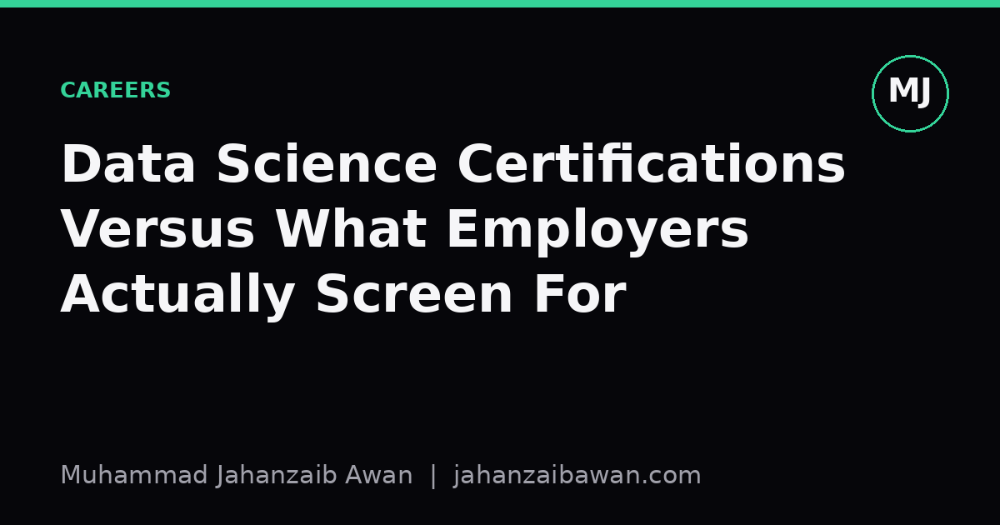

Data Science Certifications Versus What Employers Actually Screen For
A certificate on a CV answers a narrow question, whereas the hiring process asks several different ones. Here is where the gap usually sits.

What a certificate actually certifies
A certification typically verifies that you completed a sequence of modules, passed some quizzes, and perhaps submitted a capstone that was graded against a rubric. That is a real signal, but it is a narrow one. It tells an employer you can follow instructions, use a particular library, and produce output that matches an expected answer key. It rarely tells them whether you can take an ambiguous business question, decide what to measure, and defend that decision when someone pushes back.
I say this as someone who has sat through plenty of structured coursework. The exercises are usually clean: a tidy CSV, a clear target column, a metric already chosen for you. That is pedagogically sensible because you need stable ground before you learn to walk. But it also means the certificate measures execution on a pre-solved problem, not the harder skill of recognising that the problem was never well posed in the first place.
Employers, especially at the screening stage, are often trying to filter for something closer to judgement: can this person avoid an obviously wrong analysis, can they explain a trade-off in plain language, can they tell when their own result is too good to be true. None of that shows up directly on a certificate transcript. It shows up in how you talk about your work.
Where the gap actually bites: a worked example
Imagine two candidates applying for the same data scientist role. Candidate A holds three certifications and lists an accuracy of 97 percent on a churn prediction capstone. Candidate B has one certification and a GitHub repository with a churn model that scores 81 percent balanced accuracy, but includes a short write-up explaining that the dataset was time-ordered, that they split train and test by date rather than randomly, and that a naive baseline of predicting the majority class already achieved 76 percent.
On paper, Candidate A looks stronger. In an interview, the gap usually reverses. Ask Candidate A how the train and test sets were constructed and the answer is often a random 80/20 split, which for churn data is a classic source of leakage: future account activity and current account status can leak into features that predict churn, inflating accuracy to a number that will never reproduce in production. Candidate B's 81 percent, measured against a correctly time-aware split and a properly stated baseline, is the number that actually says something about generalisation.
A competent interviewer or technical screener will ask exactly the questions that expose this: how was the split done, what would a dumb baseline score, what happens to this model a month after deployment when the underlying population shifts. These are not exotic questions. They are the standard checklist for anyone who has been burned by a leaky pipeline before, and most experienced hiring managers have been burned at least once.
This is the core mismatch. Certifications grade you on hitting a target metric inside a controlled exercise. Employers are trying to find out whether you understand why that metric might be meaningless outside the exercise. A syllabus rarely has time to dwell on that, because it is hard to assess at scale and harder still to put on a multiple-choice quiz.

The skills that actually get screened, and how to show them
From what consistently comes up in technical screens and take-home tasks, four things get tested far more than any specific tool: data handling and leakage awareness, baseline comparison, communication of uncertainty, and basic software hygiene. A certification can touch on all four, but a transcript cannot demonstrate any of them convincingly. Only artefacts can.
Leakage awareness is best shown through a project write-up that states explicitly how the split was constructed and why, particularly for any data with a time dimension or grouped structure such as multiple rows per customer. Baseline comparison means always reporting what a trivial model would score, whether that is predicting the majority class, predicting the mean, or using the previous period's value, so the reader can judge whether your model earned its complexity. Communicating uncertainty means giving a confidence interval or at least a range rather than a single point estimate, and being honest when the sample size is too small to support a strong claim. Software hygiene means a repository that actually runs: a requirements file, a seed set for reproducibility, and a README that states the data source and any known limitations.
None of this requires abandoning certifications. They are useful for structured learning and for signalling baseline competence to automated resume filters, which do still scan for keywords and credentials. The mistake is treating the certificate as the finished product rather than as scaffolding. The finished product is a small number of projects where you can walk someone through every decision you made and why you made it, including the ones that turned out to be wrong.
A practical takeaway
If you are deciding how to spend the next month, the highest-leverage move is usually not another certificate. It is taking one project you already have, or one from a certification capstone, and rebuilding its evaluation properly: a leakage-aware split, a stated baseline, an honest discussion of what the result does and does not support. Write that up in two or three paragraphs and put it where a screener can find it.
That single artefact, done rigorously, will answer more of the questions an interviewer actually asks than a fourth certificate ever will. Certifications open the door by getting past keyword filters; judgement, demonstrated concretely, is what gets you through the interview itself.